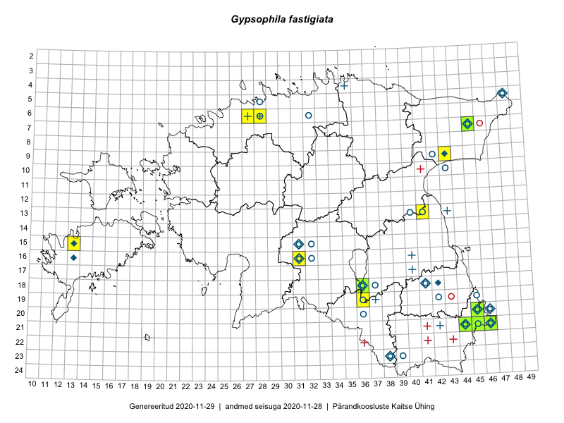

Gypsophila fastigiata
Uuendatud: 2016-12-01
Kaardile koondatud taksonid: Gypsophila fastigiata L.

Kaart põhineb 26 kirjel.
Kuvatud viited 20 esimesele andmebaasikirjele, ülejäänud PlutoFis
- Thea Kull: 2015-04-27: 07-45: GPS punkt
- Rein Kalamees, Kersti Püssa: 2015-07-15: 20-45: GPS punkt
- Toomas Kukk, Kersti Tambets, Sten Mander, Janika Sammasto, Timo Luhamäe: 2014-07-30: 21-45: ala
- Thea Kull, Peedu Saar: 2015-04-27: 07-45: GPS punkt
- Rein Kalamees, Kersti Püssa: 2015-07-15: 21-45: ala
- Rein Kalamees, Kersti Püssa: 2015-07-15: 21-45: GPS punkt
- Rein Kalamees, Kersti Püssa: 2015-07-15: 21-45: GPS punkt
- Rein Kalamees, Kersti Püssa: 2015-07-16: 20-45: ala
- Ott Luuk, Hannes Pehlak: 2015-07-22: 07-45: ala
- Mari Reitalu, Oliver Parrest: 2015-05-14: 15-13: ala
- Mari Reitalu, Oliver Parrest: 2015-07-24: 15-13: ala
- Mari Reitalu, Oliver Parrest: 2015-07-24: 15-13: GPS punkt
- Mari Reitalu, Oliver Parrest: 2015-05-14: 15-13: GPS punkt
- Helle Mäemets, Mare Leis: 2015-06-24: 18-36: ala
- Helle Mäemets, Malle Timm: 2015-06-24: 18-36: GPS punkt
- Toomas Kukk, Tiit Hallikma, Johannes Kõdar: 2016-06-14: 21-44: ala
- Toomas Kukk, Tiit Hallikma, Johannes Kõdar: 2016-06-14: 21-45: ala
- Meeli Mesipuu, Timo Luhamäe: 2016-06-14: 21-46: GPS punkt
- Meeli Mesipuu, Timo Luhamäe: 2016-06-14: 21-46: GPS punkt
- Meeli Mesipuu, Timo Luhamäe: 2016-06-14: 21-46: GPS punkt